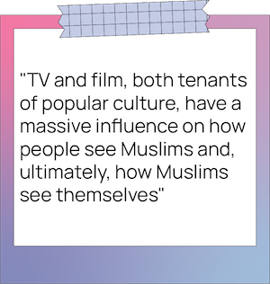

While watching romance films and TV shows, it's rare that I find myself being represented in the content I
consume. The romantic leads are usually white and have grown up with Western customs and traditions
different from mine and other Muslim womens’. Their lives are ones I cannot relate to. That's why when I see
Muslim representation in love interests and relationships on screen, it always warms my heart. When I
watched the trailer for Elite, a Spanish drama on Netflix that features a Muslim girl named Nadia who
goes to an elite private school, I was highly anticipating its release.
There’s rarely any Muslim representation in the mainstream media, and when there is, it often includes
terrorist subplots—like in Patrick Vollrath’s film 7500, which
deploys the overdone ethnic stereotype of Arab men who are supposed terrorists hijacking an airplane. A 2021
report titled Missing & Maligned, from the University of California’s Annenberg Inclusion
Initiative, found there was a severe lack of Muslim roles in the film industry. Although Muslims account for
24 per cent of the world's population, just 1.6 per cent of the 8,965 speaking parts in the films surveyed
were Muslim.
As I watched the first episode of Elite, seeing Nadia wearing her colourful hijabs to school was
intriguing to me; it was one of the first times I had the opportunity to watch someone like me on
screen. I thought Nadia would become a very meaningful character to both myself and many other Muslim women
also navigating life as a hijabi in Western society, while still trying to keep her faith. But when I
watched the show in its entirety, initial feelings of content and intrigue were quickly replaced by sadness
and disappointment.
During the first season of Elite, Nadia wears her hijab regularly to school until the administration
gives her an ultimatum: she can continue wearing the hijab and face expulsion or take off her hijab while in
school in order to continue her education. Nadia decides to remove her hijab during school and only after
hours. During her time at school, her fellow classmate, Guzmán, befriends Nadia and begins to develop
feelings for her. Things quickly go south when she conceals her mirrored feelings due to her strict parents
and their beliefs. Later in the show, she tries to make Guzmán jealous and ‘empowers herself’ by removing
her hijab and going to a bar to drink alcohol with her friends in an effort to make him more attracted to
her.
That was the moment I knew I had lost Nadia as a valid representation of a Muslim woman. The scene feeds
into the Western notion that hijab lessens a woman’s beauty and autonomy—which is false and harmful to the
impressionable teens watching the show.
The hijab is a head-covering, scarf or veil that most Muslim women wear in public and in front of
non-familial males. While every woman has a unique journey to practicing modesty and hijab, the stigma
surrounding hijab has many consequences, especially in the West. According to Sadaf Jamal, a registered
psychotherapist based in Toronto, Western media has been biased and carries stereotypes for hijabi Muslim
women. Hijabis are often portrayed as dependent, oppressed, brainwashed, weak and not belonging to the
professional world.
The hijab is often seen as a barrier between a woman who is free and a woman being controlled, a concept the
2019 movie Hala plays into.
Toward the end of the film, the titular character, Hala, who wore a hijab the majority of the time, wants to
start fresh in college. She removes the hijab and uses it as a moment to be free and disconnect from her
past self.
Maissa Houri, a filmmaker and actor based in Ottawa, Ont., says the lack of proper representation for
Muslims stems from their lack of representation among writers of film and TV. She says when writers are
white, a white saviour complex kicks in where they think the hijabi character is oppressed. They then remove
her hijab to grant her freedom, which Houri says is where the problem lies. “When they’re an outsider
looking in on us, they’re making their own perception of what our lives are like,” she adds.
Amidst the negativity surrounding the hijab and Western impositions on its meaning, can you blame me for
wanting proper representation for myself and others like me, who enjoy wearing the hijab, are proud of it
and would decidedly not take it off for a boy? That being said, television can and has done
better.
Take Sana Bakkoush for example, the one Muslim character in television I have ever related to and felt
genuinely represented by. Sana, a character from a popular Norwegian teen show called Skam, is of Arab descent, wears
the hijab and dresses mostly in black. Each season of the show focused on a different character from the
same friend group, with Season 4 centred entirely on Sana.

Hers is a character written beautifully and accurately. The showrunners cast a hijabi for a hijabi role,
instead of a non-practicing actor. The second and most important thing they did was normalize her.
The writers didn’t make Sana’s choice to wear the hijab a focal point in her story. Even in her own season,
there was never a feeling of oppression where Sana felt she needed to be saved from her religious family. In
fact, her biggest problem was having a crush on her older brother’s best friend, which was refreshing to see
because the way she went about developing that connection with him wasn’t out of character or obvious.
She was just another hijabi girl navigating love, family and life without being seen as a prisoner to her
faith. That’s why I felt deeply connected to the show.
In high school, I remember my friends and I would scramble to find translated episodes on a Google Drive
because we were so eager and invested in the season that focused on her. It was an unforgettable bonding
experience because we all had so much trust in Iman Meskini, the actress who plays Sana, and the series
creator, Julie Andem, to give young hijabis someone to look up to.
When it comes to Muslim love and dating, the shows Elite and Skam take two very different
paths—one is provocative, while the other is routinely lacking nuance. In Skam, Sana starts to
develop a crush on Yousef, her brother’s best friend. Throughout season four, Sana and Yousef talk and hang
out at a park playing basketball together. She would even Facebook stalk him. The most physically intimate
they ever got was when Sana pulls Yousef in for a tight hug when he tells her that he was leaving for the
summer. But their connection was still strong as they would constantly text each other and he would walk her
home from places without being physical, displaying the realistic nature of a lot of Muslim relationships.
Even though I feel like I’m yelling into the void when asking for decent representation for hijabis in the
media, it needs to be reiterated until something changes. This change is essential because TV and film, both
tenants of popular culture, have a massive influence on how people see Muslims and, ultimately, how Muslims
see themselves.
As someone who grew up with little-to-no hijabi representation, I didn’t feel like I belonged in my society.
But things are changing, albeit slowly.
I can only hope that young Muslim girls who are encapsulated in film and TV like myself, find one character
they can hold on to and connect with. To remind them that they are valid and that they belong.